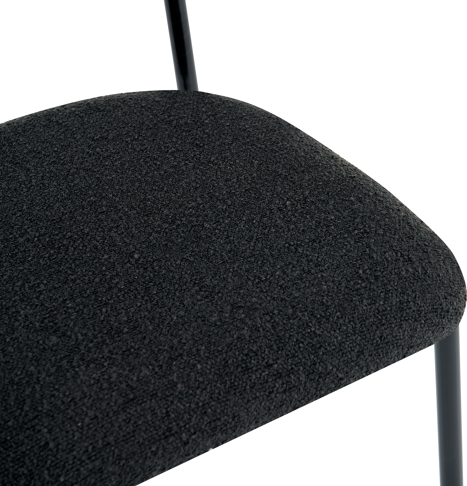
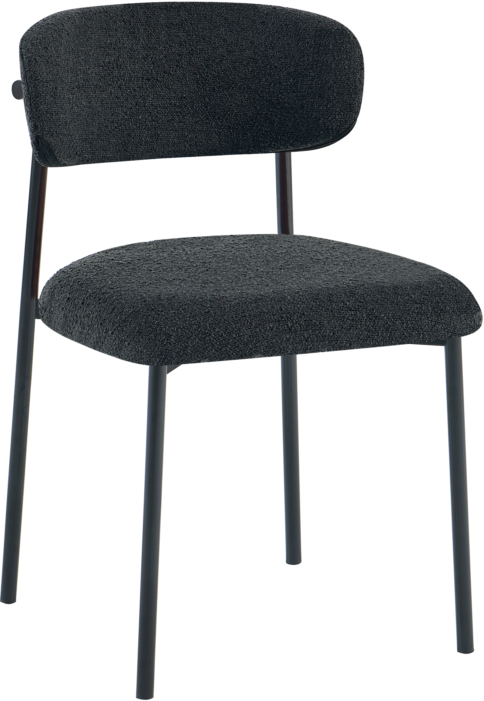
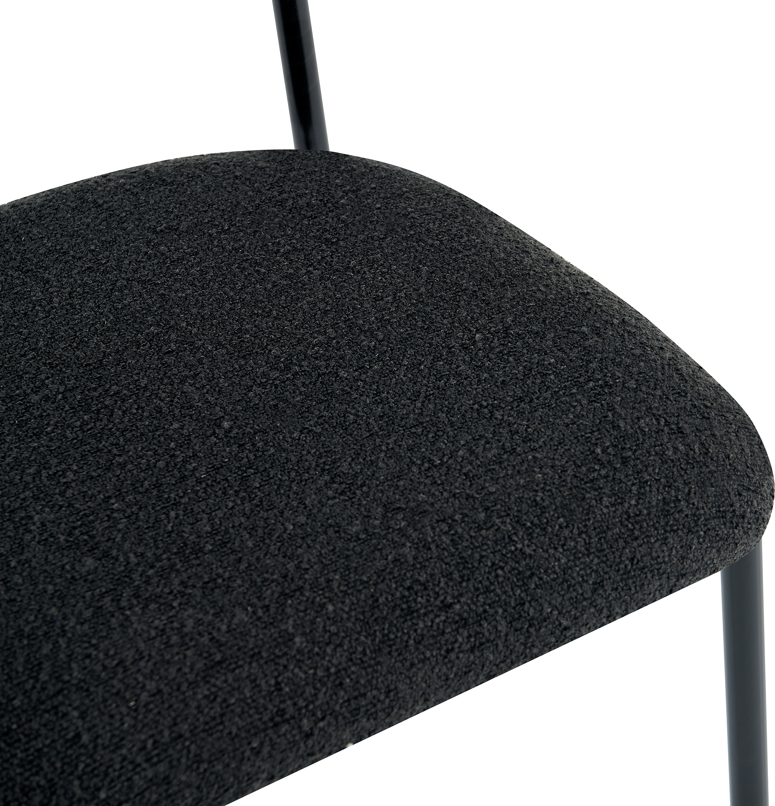
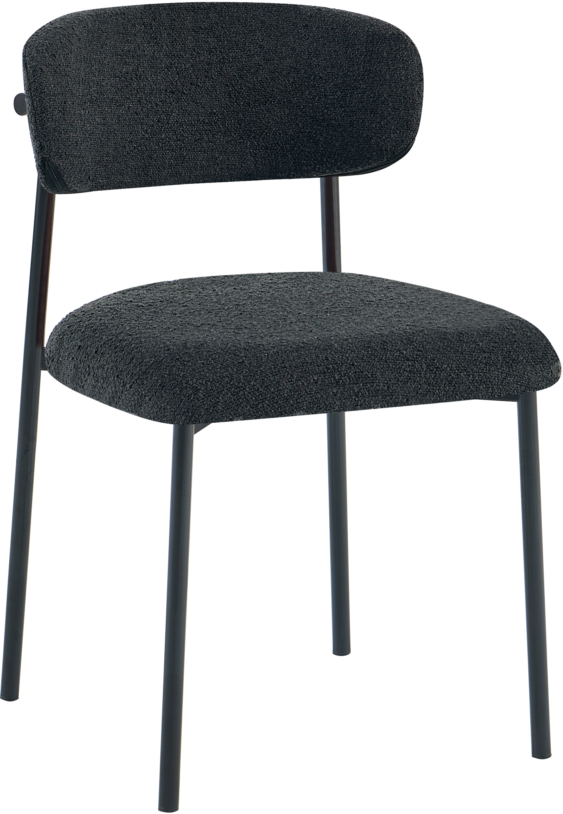

Bow ruokapöydän tuoli musta
198100
 




Kuvaus
Bow ruokapöydän tuoli musta on erinomainen valinta moderniin ruokailutilaan. Tuoli on verhoiltu hyvälaatuisella mustalla kankaalla ja siinä on pehmeä vaahtomuovitäytteinen istuin, joka tarjoaa mukavuutta pitkälle aterialle. Tyylikäs musta metallirunko on kestävä ja tuo tuoliin nykyaikaisen ilmeen. Tuolin mitat ovat 52,5 cm syvyys, 48 cm leveys ja 80 cm korkeus, ja se kestää jopa 120 kg painoa, joten se sopii monenlaisille käyttäjille. Vaikka tuoli tulee osissa, sen kokoaminen on helppoa ja vie alle 15 minuuttia. Bow-tuolin valmistuksessa on panostettu hyväänlaatuun ja se soveltuu hyvin arkikäyttöön. Lähtöisin se on Nest_living-tuotemerkiltä, tämä tuoli tarjoaa hyvän hinta-laatusuhteen ja sen muotoilu tekee tästä tuolista ajattoman valinnan kodin ruokailutilaan.
Tekniset tiedot
| Väri | Musta |
|---|